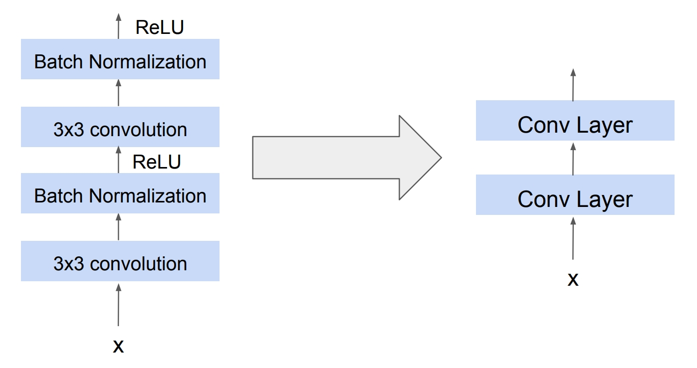

Modern Convnets
Cornell CS 4/5782
Spring 2025
We have now seen the basic building blocks of how Convolution Networks are constructed. As a review, refer to the image below.

Now, we can dive into the world of modern CNN architectures and how they have solved various challenges in the industry by expanding on this basic architecture. While we can continue to use the architecture we have learned so far and stack our CNN to create deep structure, performance varies wildly on various choices such as hyperparameters and architecture design.
The majority of these networks’ success is measured in the ImageNet classification competition, in which a variety of innovations have iteratively improve scores overtime. We will overview several of the famous architectures throughout time and understand the conclusions that can be made from their innovations.
1 Network Depth
With the introduction of AlexNet, there was a first major breakthrough of CNNs within computer vision. The team behind AlexNet achieved exceedingly great performance in the ImageNet competition of 2012. AlexNet demonstrated that features such as edges and structures within images can be inherently learned by the model through a deep layer of networks. The network itself was trained using high quality compute and GPUs over hundreds of epochs.
AlexNet offered many improvements to its predecessor, LeNet, which differentiated it as the new go-to CNN architecture. The team had implemented dropout to improve the accuracy of the model, as well as training optimizations through the ReLU activitation function. However, AlexNet’s architecture required large matrices of size 6400 x 4096 and 4096 x 4096, presenting a nontrivial amount of learnable parameters bottlenecking training.

Figure: AlexNet architecture from Chapter 8 of Dive into Deep Learning.
As a result of AlexNet’s success, many competitors came to the conclusion that achieving better performance in the ImageNet competition was simple. Just make the network deeper! But in reality, we will quickly learn that deeper networks, while offering some benefits, are not always the best way forward.
As the network becomes deeper and more complicated, the amount of compute and data required grows quickly. Hardware and data limitations have always been a reality, and this was especially prevalent during this early time period. Furthermore, just increasing network depth does not guarantee better performance. For example, a 56 layer CNN had higher training and test error than a 20 layer CNN on the CIFAR-10 dataset [He et al., 2016].
But why would a deeper network cause achieve higher training error? Let’s take a look at the gradient equation used during backpropagation.
\[ \frac{\delta z}{\delta z_i} = \frac{\delta z}{\delta z_{n-1}} \frac{\delta z_{n-1}}{\delta z_{n-2}} \cdots \frac{\delta z_{i+1}}{\delta z_i} \tag{1}\]
Taking a look at this equation, we can see that as the network gets deeper so does the update equation. Now, imagine if each of these terms \(\frac{\delta z_{i+1}}{\delta z_i} << 1\). Such a small value will compound overtime and cause the overall gradient to become exponentially smaller, ultimately causing it to approach 0. Such a low gradient will then cause the weights to not be updated properly, thus causing the poor training error that is observed in these deeper networks.
2 GoogLeNet/Inception Net
In response to AlexNet’s limitations, Google challenged a group of researchers to develop an ultra efficient computer vision model that has a limited amount of resources available, codenamed InceptionNet from the quote in Inception “We Need to go Deeper”!
GoogLeNet was a major leap forward in architecture design, and its core contribution lies in efficiency through parallelism. The Inception module is what allows GoogLeNet to extract multi-scale features simultaneously, capturing both fine and coarse patterns in images. These modules or blocks are then stacked within the architecture, performing better than its predecessors.
2.1 The Inception Module
The Inception block combines multiple types of filters in parallel:
- 1×1 convolutions for dimensionality reduction and non-linearity,
- 3×3 and 5×5 convolutions for mid- and large-scale feature extraction,
- 3×3 max pooling for capturing spatial invariances.
These outputs are then concatenated along the channel dimension.

A key innovation used in GoogleNet was the 1x1 convolutions. This convolution allows the architecture to reduce the number of channels and dimensions of the image, while maintaining the individual values per channel. Given an image of size WxHxC, applying a kernel of 1x1xN will produce an output of size WxHxN. Thus, if N < C we are essentially lowering the parameter count through channel reduction. We encourage you to figure out how this happens!
GoogleNet Innovations
- Parameter Efficiency: Despite being 22 layers deep, GoogLeNet used fewer parameters than AlexNet by aggressively using 1×1 convolutions.
- Improved Representational Power: Multiple receptive fields allowed each block to capture a wide range of features.
- Auxiliary Classifiers: Intermediate outputs were added during training as auxiliary losses to combat vanishing gradients and improve convergence.
Despite the gains of GoogLeNet, it had some limitations. The manual design of Inception modules required careful engineering. Furthermore, while it was deeper and more efficient, training very deep networks still ran into optimization problems like vanishing gradients.
This led to the next major innovation: ResNet, which enabled the successful training of extremely deep networks through a simple but powerful idea — residual connections.
3 ResNet (Residual Network)

ResNet, or Residual Network, is a type of deep neural network architecture introduced by Kaiming He et al. in 2015. It was designed to address the vanishing gradient problem in very deep networks by introducing skip connections (also called residual connections).
Important Note
From here on out, this is what we will be abstracting a convolutional layer to be:

Key Idea
The main innovation of ResNet is the residual block, where the input is passed directly to a deeper layer, skipping one or more layers in between.
This allows gradients to flow more easily during backpropagation, enabling very deep networks (e.g., ResNet-50, ResNet-101, ResNet-152).
A residual block is the core component of a ResNet (Residual Network). It enables the training of very deep neural networks by allowing information (and gradients) to flow directly across layers via skip connections.
Structure of a Residual Block
A basic residual block consists of:
- Two convolutional layers .
- A skip connection that bypasses these layers and adds the input directly to the output.
Residual Connections and the Vanishing Gradient Problem
In a regular deep neural network, each layer transforms its input into an output, often written as:
\[ z = F(a) \]

Where:
- \(a\) is the input (activation from the previous layer),
- \(F(a)\) is the output after applying transformations like convolution, batch normalization, and ReLU.
In residual networks, this changes to:
\[z = F(a) + a\]

This is called a skip connection or residual connection, because it “skips over” the function F and adds the original input a directly to the output.
Why This Helps with the Vanishing Gradient Problem
As shown in equation Equation 1, deeper networks cause gradients to shrink exponentially.
With residual connections, each layer’s output is \(z = F(a) + a\), so during backpropagation, the gradient becomes:
\[ \frac{∂L}{∂a} = \frac{∂L}{∂z} \times \left( \frac{∂F(a)}{∂a} + I \right) \]
Where \(I\) is the identity matrix from the derivative of \(a\) (since \(∂(a)/∂a = I\)).
This means that even if the gradient of \(F(a)\) vanishes (i.e., becomes very small), the presence of the identity term ensures that some gradient always flows through:
- The shortcut path ensures direct gradient flow from later layers back to earlier layers.
- This helps preserve gradient magnitude, preventing them from vanishing.
- As a result, deep networks can be trained effectively without performance degradation.
4 Stochastic Depth
“Can we train very deep ResNets without paying the full computational cost at every iteration?”
Stochastic depth answers yes by randomly dropping entire residual blocks during training — making the network shallower on‑the‑fly, yet keeping its full depth at inference.
4.1 Why Do We Need Stochastic Depth?
| Challenge in Very‑Deep Nets | Consequence |
|---|---|
| Longer forward pass | Slower training iterations |
| Longer backward pass | Smaller batch sizes (GPU memory) |
| Vanishing/exploding gradients (even with skips) | Optimization difficulty |
Insight: We already know ResNets work because the identity skip path lets the network behave like an ensemble of shallower sub‑networks.
So why not explicitly train an ensemble of these shallower nets?
- During training each residual block is dropped (skipped) with probability \(p_l\), where \(l\) is the index of the residual block.
- During inference all blocks are kept (i.e. the full depth is used).
- To keep the expected activations consistent, we scale surviving blocks.
4.2 Notation
Let’s recall the basic structure of a residual block. As discussed earlier:
\[ z = F(a) + a \]
Where:
- \(a\) is the input to the block (activation from the previous layer)
- \(F(a)\) is a sequence of operations (e.g., convolution → batch norm → ReLU)
- \(z\) is the output of the block
- \(F\) contains learnable parameters \(\\theta\)
In stochastic depth, we introduce a random binary variable We define a random binary variable:
\[ b \sim \text{Bernoulli}(1 - p) \]
that determines whether to apply the residual function ( F(a) ) or skip it entirely during training.
So during training, the residual block becomes:
\[ z = \begin{cases} F(a) + a & \text{if } b = 1 \quad \text{(block kept)} \\[6pt] a & \text{if } b = 0 \quad \text{(block dropped)} \end{cases} \]
Where:
- \(p \in [0, 1]\) is the drop probability,
- \(b \sim \text{Bernoulli}(1 - p)\) controls whether the block is active in this forward pass.
During inference, we use all blocks but scale the residual output by the expected survival rate \((1 - p)\) to match training statistics:
\[ z = (1 - p) \cdot F(a) + a \]
This ensures that the expected output of the block is consistent between training and test time.
4.3 Probability Scheduling
A common way to define the drop probability \(p\) for each layer is to make it increase linearly with depth. For a network with \(L\) residual blocks, the drop probability for the \(l^{\text{th}}\) block is:
\[ p_l = \frac{l}{L} \cdot p_{\text{max}} \]
where:
- \(p_{\text{max}}\) is the maximum drop probability at the final layer (e.g. 0.5),
- \(l\) is the block index (starting from 1).
This means early layers are kept more often, and deeper layers are dropped more often during training — which aligns well with how gradients behave in deep networks.
4.4 Scaling for Inference
During inference, all blocks are used. To maintain consistency with training-time activations, we scale the residual output by the expected keep probability ( 1 - p ):
\[ z = (1 - p) \cdot F(a) + a \tag{2} \]
This ensures that the expected value of the output matches what the model saw during training.
4.5 Backpropagation Sketch
In stochastic depth, only the residual blocks that are kept (i.e., not dropped) contribute to the gradient during training.
Let:
- \(a\) be the input to the residual block,
- \(F(a; w)\) be the residual function — a learnable transformation applied to \(a\), parameterized by weights \(w\),
- \(z = F(a; w) + a\) be the output when the block is kept,
- \(b \sim \text{Bernoulli}(1 - p)\) be the binary variable that determines whether the block is used,
- \(w\) be the weights of the residual function \(F(a)\).
Then the gradient of the loss with respect to the block’s parameters is:
\[ \frac{\partial L}{\partial w} = \begin{cases} \frac{\partial L}{\partial z} \cdot \frac{\partial F(a; w)}{\partial w}, & b = 1 \quad \text{(block kept)} \\[6pt] 0, & b = 0 \quad \text{(block dropped)} \end{cases} \]
Only the active blocks receive gradients and are updated. As a result, each training batch effectively updates a random sub-network — acting like a built-in model ensemble and a form of strong regularization.
4.6 Intuition & Analogy
| Technique | Drops what? | Purpose |
|---|---|---|
| Dropout | Individual neurons | Prevent co‑adaptation |
| Stochastic Depth | Whole residual blocks | Reduce depth per iteration and act as model ensemble |
Think of it as “Drop‑ResBlocks” instead of “Drop‑Neurons”.
Overall stochastic depth leads to faster training as fewer blocks result in shorter forward/backward pass per iteration. They also have better generalization by acting as an average of an exponential number of shallower ResNets.
5 DenseNet

“What if, instead of adding features like in ResNets, we simply concatenate them so every layer has direct access to all earlier information?”
DenseNets answer yes by densely connecting each layer to every other layer in a feed-forward fashion, dramatically improving information and gradient flow.
5.1 Why Do We Need DenseNets?
| Challenge in Very‑Deep Nets | Consequence |
|---|---|
| Vanishing/exploding gradients (even with skips) | Optimization difficulty |
| Feature reuse is limited | Redundant parameters, bigger models |
| Parameter growth vs. depth | Deeper nets often become memory-hungry |
Insight: If each layer could see all earlier feature maps, it could reuse them instead of relearning similar filters, while gradients would flow through many short paths.
5.2 High-Level Idea
- Dense Connectivity: In a DenseNet, each layer \(l\) receives as input the concatenation of the feature maps produced by all preceding layers:
\[ a_l = [z_0, z_1, \dots, z_{l-1}] \]
where:
- \(z_i\) is the output (feature map) of the \(i^\text{th}\) layer
- \(a_l\) is the input to the \(l^\text{th}\) layer
- \([\,\cdot\,]\) denotes concatenation along the channel dimension
This structure allows each layer to directly access the features learned by all previous layers, promoting feature reuse and improving gradient flow.
Composite function: Each layer applies a transformation:
\[ z_l = H_l(a_l) \]
where \(H_l\) is typically BatchNorm → ReLU → 3×3 Conv.
Linear growth: The number of new feature maps added at each layer is a small growth rate \(k\).
5.3 Notation
- \(z_0\): initial input (e.g., output of a stem convolution layer)
- \(a_l\): concatenated input to layer \(l\)
- \(H_l(\cdot)\): composite function of layer \(l\) with weights \(w_l\)
- \(z_l\): output feature maps of layer \(l\)
- \(k\): growth rate (number of new feature maps each layer adds)
A dense block with \(L\) layers generates:
\[ a_{l+1} = [a_l, z_l] \quad \text{for } l = 0, \dots, L-1 \]
The total number of feature maps after the block is approximately:
\[ \text{Channels} = \text{input channels} + k \cdot L \]
5.4 Dense Block Formulation
Inside a dense block:
\[ z_l = H_l(a_l; w_l), \qquad a_{l+1} = [a_l, z_l] \]
Because DenseNets use concatenation instead of addition, feature dimensionality grows with depth.
To prevent memory from growing unboundedly, transition layers are added between dense blocks:
\[ \text{Transition: BN → 1×1 Conv → AvgPool} \]
The 1×1 convolution acts as a compression step, reducing the number of channels.
This is often done with a compression factor \(\theta_{\text{comp}} \in (0, 1]\).
5.5 Backpropagation Sketch
Gradients flow through multiple direct paths due to concatenation:
- Local path: layer \(l\) contributes to \(z_l\) via \(w_l\)
- Shortcut paths: since \(z_l\) appears in \(a_m\) for all \(m > l\), its gradient includes contributions from all later layers.
Gradient with respect to weights \(w_l\):
\[ \frac{\partial L}{\partial w_l} = \frac{\partial L}{\partial z_l} \cdot \frac{\partial H_l(a_l;\, w_l)}{\partial w_l} \]
Gradient of \(z_l\) accumulates contributions from every future layer that uses it:
\[ \frac{\partial L}{\partial z_l} = \sum_{m = l+1}^{L} \frac{\partial L}{\partial a_m} \cdot \frac{\partial a_m}{\partial z_l} \]
This design ensures better gradient flow and deep supervision.
5.6 Intuition & Analogy
| Architecture | Connection Type | What Flows Easily? | Analogy |
|---|---|---|---|
| ResNet | Addition skip | Gradient magnitude | “Highway” for gradients |
| DenseNet | Concatenation | Gradients and features | “Bus route with many stops” |
DenseNets behave like feature reuse engines, where each layer adds only new, complementary information.
5.7 Practical Impact
- Parameter-efficient: fewer total weights compared to ResNets of similar accuracy
- Strong regularization: encourages feature reuse and reduces overfitting
- Improved gradient flow: multiple short paths to output
- Memory considerations: more feature maps → use compression and checkpointing
7 Summary of Models
- Plain CNNs (e.g., AlexNet): Introduced depth and ReLU activations; used dropout for regularization. Suffered from high parameter counts and training inefficiency due to large fully connected layers.
- GoogLeNet/Inception: Improved efficiency through parallel convolutional filters and 1×1 convolutions for dimensionality reduction. Introduced Inception modules to extract multi-scale features.
- ResNet: Tackled the vanishing gradient problem with residual (skip) connections, allowing very deep networks (50+ layers) to be trained effectively.
- Stochastic Depth: Enhanced ResNets by randomly skipping residual blocks during training, reducing computation and improving generalization while keeping full depth during inference.
- DenseNet: Connected every layer to all previous ones via feature concatenation. Promoted feature reuse and better gradient flow, reducing parameter redundancy and enabling efficient deep models.
8 Reference
Gao Huang, Zhuang Liu, Laurens van der Maaten, Kilian Q. Weinberger
Densely Connected Convolutional Networks
CVPR 2017
https://arxiv.org/abs/1608.06993
Aston Zhang, Zachary C. Lipton, Mu Li, Alexander J. Smola Dive into Deep Learning – Chapter 8: Modern Convolutional Neural Networks https://d2l.ai/chapter_convolutional-modern/index.html
He et al., 2016] Kaiming He, Xiangyu Zhang, Shaoqing Ren, and Jian Sun.
Deep Residual Learning for Image Recognition.
Proceedings of the IEEE Conference on Computer Vision and Pattern Recognition (CVPR), 2016.
https://arxiv.org/abs/1512.03385